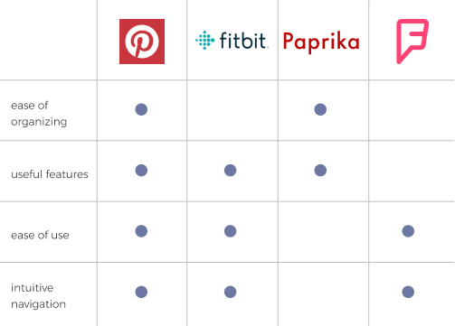

RE:fresh
CLOUD STORAGE APP FOR HEALTH & FITNESS ENTHUSIASTS
SUMMARY
The goal of this project was to create a cloud storage app that would stand out in the cloud storage and organization market. RE:fresh was created to provide a solution for health & fitness enthusiasts who are interested in saving information from the web and other content in a convenient and easy to use app. It also provides tools for people who want to reach their health & fitness goals.
ROLES
- Research
- UX/UI Design
- Product Design
DELIVERABLES
- User Flows
- Wireframes
- Hi-fi Mockups
- Branding
- Style Guide
TOOLS
- Figma
- Sketch
- InVision
- Usability Hub
THE PROBLEM
In this project I was asked to research and design a cloud storage app. The issue I was expected to solve was to find a solution for a cloud storage app that would have features that stand out of the other competitors such as Google Drive, Dropbox, Pinterest and Evernote.
THE SOLUTION
RE:fresh is a cloud storage app that is tailored for health and fitness enthusiasts. Through the research I conducted, I discovered that there is room for a cloud storage app that is specific for health & fitness, where users can store all of their interests as well as get tools that will help them stay on track with their goals.
THE PROCESS
In this project, a client was excited about the possibilities in the cloud storage and organization market. He didn’t have a very clear vision in mind, and I had to come up with an idea. The goal was to find the right combination of features to meet the needs of a particular audience.
The client had a few features that he wanted included in the app:
- Saving content from the web
- Organizing the content using some kind of organization system
- Creating content
- Uploading files from a computer or mobile device
- Collaboration
- Sharing
- Connecting with other users
The client also wanted to leverage the “Network Effect” for growth.
My role was to do the research and analyze processes in the competitors’ products as well as design the app.
RESEARCH & DISCOVERY
COMPETITIVE ANALYSIS
I researched some popular cloud storage apps: Pinterest, Paprika (recipe manager), Foursquare (travel site) and Fitbit. I was trying to determine which market would benefit from a cloud storage app. I discovered that there are already plenty of products in the organizing, recipes and travel markets. However, I saw that there is room for a health and fitness app in the cloud storage market.
You can read more about the competitive analysis here.
I also analyzed the user flows of each of the competitors for onboarding, saving an item and organizing into categories, so that I could see the strengths and weaknesses of the competitors.
You can find the user flows here.
SURVEY
The goals of the survey were:
- To determine if the users are interested in the features that the client wanted.
- Find out if users really want collaboration features and what kind of collaboration features would they like. Also, who would the users collaborate with and how?
- Get users thoughts about the competition: are they using any of the competing products? And, what do users like and dislike about the competitors’ products?
See survey